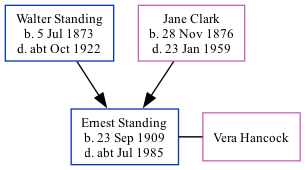

Ernest Henry Standing 1909 - c1985
[ Home ] | [ Calendar ] | [ Surnames Index ] | [ Family History ]The son of Walter Standing (a laundry foreman) and Jane Clark (a head packer in laundry)Ernest Standing, the fourth cousin once-removed on the father's side of Nigel Horne, was born in Charlton, London, England on Sep 23, 19091,2,3. He married Vera Hancock in Greenwich, London, England around May 19334. On Apr 2, 1911, he lived at 90 Charlton Lane in Charlton1.
He died c. Jul 1985 in Greenwich3.
Parents
- Walter William was born on Jul 5, 1873
- Jane Elizabeth was born on Nov 28, 1876
Citations
- 1911 Census for England & Wales - Findmypast (was age 1 and the son of the head of the household)
- England & Wales births 1837-2006 - Findmypast
- England & Wales deaths 1837-2007 - Findmypast
- England & Wales Marriages 1837-2005 - Findmypast
Media
England & Wales births 1837-2006 - BMD/B/1909/4/AZ/000531/305
England & Wales deaths 1837-2007 - BMD/D/1985/7/75228017
England & Wales Marriages 1837-2005 - BMD-M-1933-2-AZ-001187-121
Family Tree
Generated by ged2site. Last updated on Nov 13, 2024